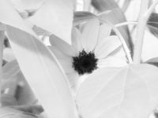
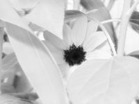

Next Photo
-
Vote
Blue Billed Duck Stares
This blue billed duck stares at me from the serenity of his pond. The posed perfectly for the photo which I most graciously snapped. One of the first photos I took with a tripod, allowed me to get good color and exposure. Thank you blue billed duck
More...
ID: 46
Title: Blue Billed Duck Stares
Description: This blue billed duck stares at me from the serenity of his pond. The posed perfectly for the photo which I most graciously snapped. One of the first photos I took with a tripod, allowed me to get good color and exposure. Thank you blue billed duck
Keywords: blue billed duck bright color
Hidden: n
Date added: 2010-09-20 21:28:55 UTC
Date taken: 2006-08-10 15:25:18 UTC
Camera: FUJIFILM.FinePix S5100 .
Resolution: 2066x1550
Mode: 1
Shutter speed: 570/100
Flash: 16
Exposure time: 10/500
Iso: 64
Metering: 3
Aperture: 600/100
Focal length: 5700/100
Artist: NathanielGuy Mahieu
Copyright: 2006 NathanielGuy Mahieu
Views: 4783
 
